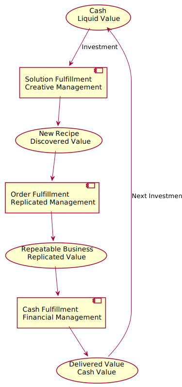

Management Theory
Financial Management
Liquidation Manager to govern Liquid Value.
It was formed in order to optimize the transformation of one form of value (coin/gold/cash) into another form of value (tangible and intangible assets).
Purpose
Manage Liquidity.
Practices
Conserve, develop and exploit cash.
Investments or loans.
Return-in-investment (RIO) oriented.
Motivate effectiveness
Small stake in any higher than expected returns achieved and a small piece of cash efficiencies achieved.
Financial targets with corresponding bonuses.
Business Management
Replication Management to govern Replicated Value
Problems that solved
- Incentives were wrong : Workers was paid for the day without considered productivity.
- Work practices were wrong : Don’t care about effectiveness.
- Management was clueless : Managers never learned to do the actual work.
Fredric Taylor’s Scientific Management
Scalable management system
Leverages time and motion studies to establish best practices for all workstations.
Factory output and time-to-delivery of an order could be calculated.
Work practices + uniform materials + known recipes / designs ⇒ reliable master planning.
Purpose
Replicate known value and known recipes, using best practices, elimination of waste, and high-quality predictive planning.
Motivate effectiveness
Date driven according to expectations set with the customer during the sales process.
- Staff : provide a bonus for achieving or surpassing reasonable production goals.
- Management : incentives to help staff achieve their time-boxed goals.
Creative Management
Create Management to govern discovery of New Value
Establish a system of management that enables and motivates creative staff to discover and realize new works of value.
Purpose
Find previously unknown recipes (unknown value) and transmute it into discovered value - new recipes and new ingredients.
Creative system principles
- You learn by failing, and new value comes from a critical mass of new learning
- So, fail often, fail quickly, but fail smartly (failure without learning is waste)
- Build platforms, practices and cultures that help people discover value
- Relentlessly discover new value, even when the odds are against it
- Empower your creative staff to transform the world by solving meaningful problems
Strong attractors and shared conception
Maintain creative motivation
- Need : something that’s missing from life
- Belief : belief it can be created
- Opportunity : a career opportunity to create that thing
- Anticipation : shared anticipation of the better future
Continuously communicating to them the “why?”.
Advises
Our goal must be to get the cost of failure down, and the rate of learning up
Small teams and small value attempts
Team composition
Yours teams need to have the research, promotion and analysis skills that are needed to rapidly discover, test and learn.
Automation
Invest in platforms and tools that speed your team’s ability to make value attemps.
Drive to value, drive to date
Don’t fate value discovery by setting arbitrary release dates.
Motivating the team
Shared conception using strong attractors.
Types of value
- Undiscovered
- Discovered
- Replicated
- Liquidated
The value fulfillment cycle

Cash Investment -> Discover Value -> Replicate Value -> Cash-out Value
Department-oriented thinking have the effect of slowing down realization of value by serializing the discovery of value, discovery of chaos and discovery of customers.
Healthy companies are a combination of the three
Every exceptional restaurant has
- an executive chef to do the creative work
- hosts, waiters, porters and line chefs to do the replication work
- an accountant to effectively cashflow the enterprise